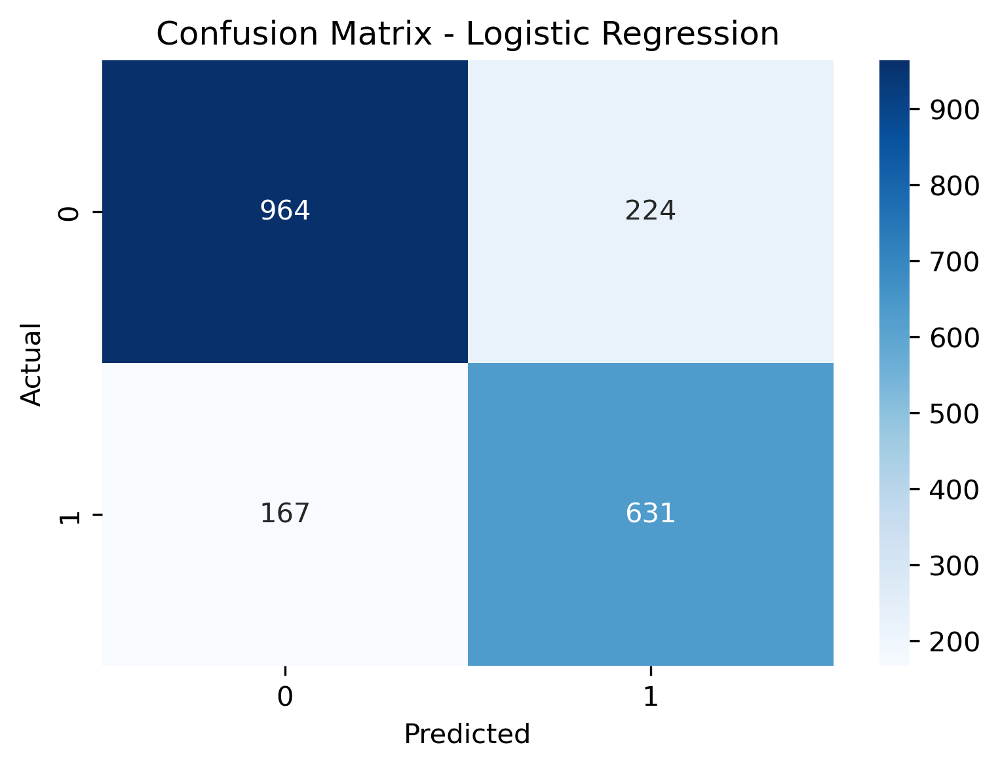
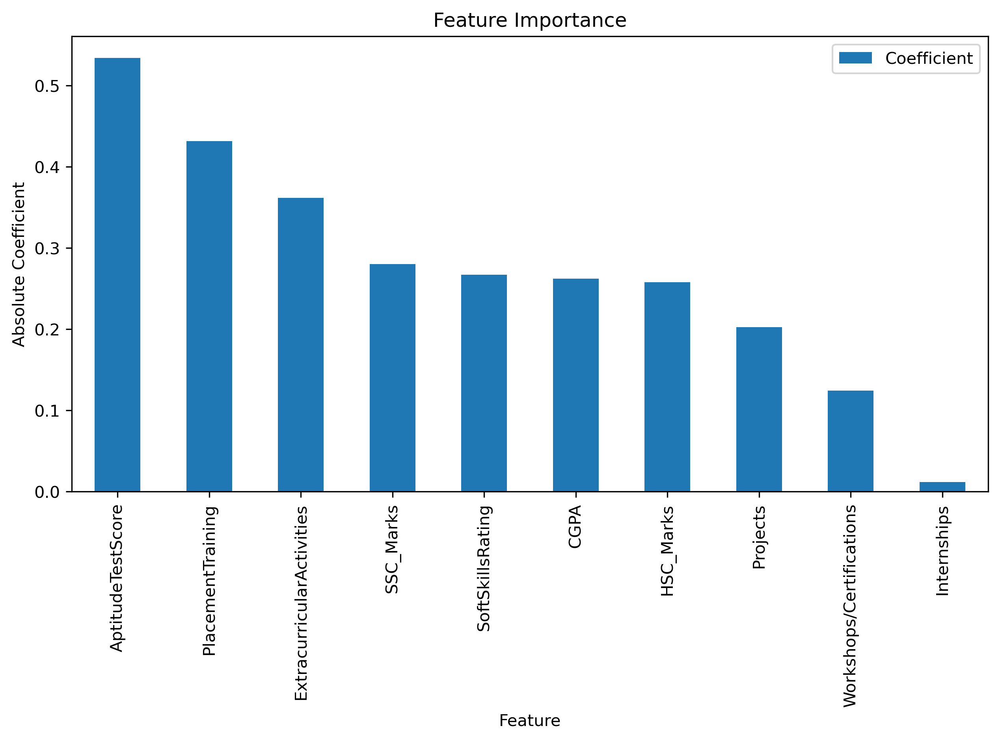
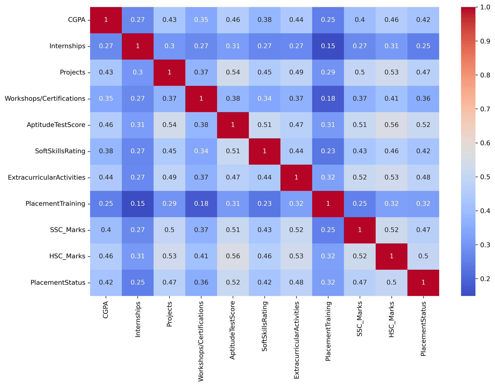
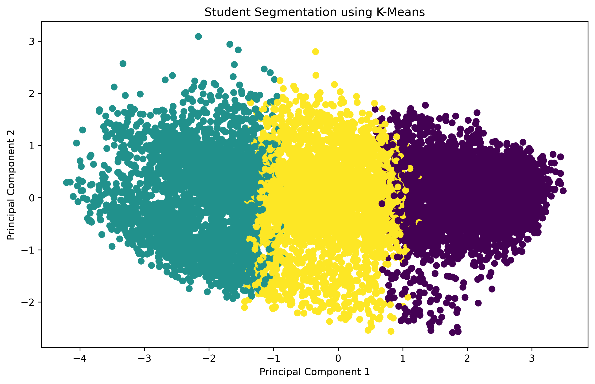

AI-Powered Platform for Placement Prediction, Student Segmentation and Career Guidance
Student Career Analytics System is a Machine Learning based web application developed to help students analyze their placement readiness, identify their category, and receive personalized career improvement recommendations.
Students enter academic and placement-related information.
Features are cleaned, validated and prepared for analysis.
Logistic Regression and K-Means models process the data.
Placement prediction, segmentation and career guidance generated.
Confusion Matrix showing the performance of the Logistic Regression model.

Visualization of features contributing towards placement prediction.

Correlation between student attributes used in the Machine Learning models.

Students grouped into clusters based on academic and placement-related features.

| Module | Algorithm |
|---|---|
| Placement Prediction | Logistic Regression |
| Student Segmentation | K-Means Clustering |
| Career Advisor | Rule-Based Recommendation System |
Team Member
Team Member
Team Member
Team Member
All team members contributed equally to the project.